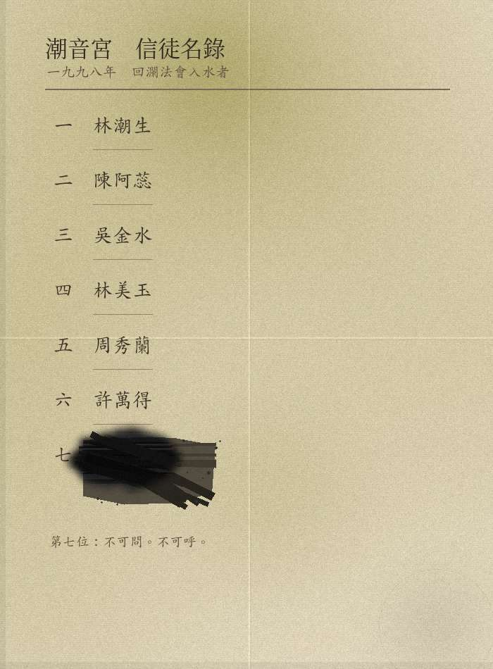

潮音宮
CHAO-YIN GONG / 汐平縣澪港鎮海尾路七號
首頁
｜
教義
｜
回瀾經
｜
名錄
｜
公告
｜
御子之聲
名錄
1998 年回瀾法會．入水七人
一
林潮生
聽潮人／住持
二
陳阿蕊
信眾
三
吳金水
信眾
四
林美玉
信眾
五
周秀蘭
信眾
六
許萬得
信眾
七
—
第七個名字被塗死了。透光、翻到背面，都看不出來。
原件最下方還有一行小字：「第七位：不可問。不可呼。」

名錄原件．第七個名字被黑筆塗死
相關：
御子之聲
｜
1998 年法會公告
Copyright 2004 回岸音檔修復工作室 最後更新 2005/03/11 03:12
原始檔
※ 本網站為虛構創作，人物、地點與事件均屬虛構。